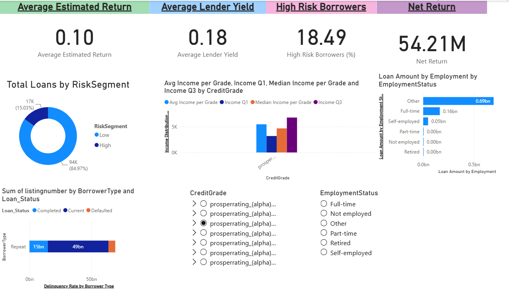

Roughly 15% of loans went bad
17,010 of the 113,937 loans were charged off, defaulted or past due. That imbalance matters: a model that simply predicts "no default" every time would already look 85% accurate, so any risk model here has to be judged on how many bad loans it catches, not on accuracy.
113,937loans analysed
17,010charged off, defaulted or past due
14.9%share of loans that went bad
